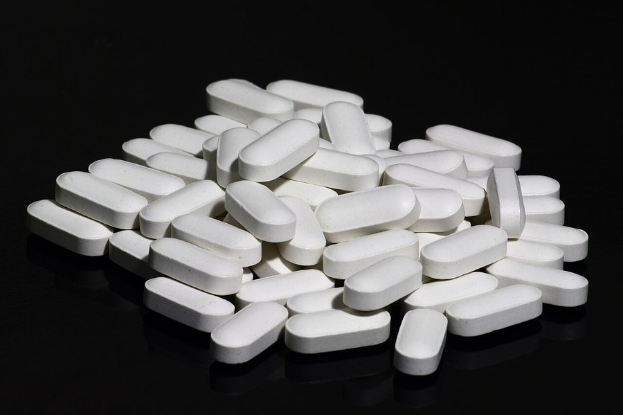

Berberine and Brain Health: Does It Support Cognitive Function?
Berberine's reputation was built on blood sugar and cholesterol. Brain-health claims followed the hype. Here's what the evidence actually supports and where it runs out.

Key takeaways
- Berberine's strongest evidence is metabolic: blood sugar and cholesterol, not cognitive performance.
- Animal and lab studies suggest possible neuroprotective effects, but human cognition trials are largely missing.
- The metabolic connection to brain health is real, since blood sugar swings and poor cholesterol control both track with cognitive decline over time.
- It can interact with medications, including some diabetes and blood pressure drugs, so a doctor check-in matters.
- Treat brain-health marketing around berberine skeptically until direct human trials exist.
Berberine and brain health is a pairing that shows up constantly in supplement marketing right now, but the honest answer is that direct evidence is thin. Berberine, a compound found in plants like barberry and goldenseal, has a genuinely solid research base for blood sugar and cholesterol. Its jump into brain-health territory rests mostly on that metabolic connection and on early animal research, not on human trials testing memory or focus directly.
What is berberine, and why does it get linked to the brain?
Berberine is a bitter, yellow alkaloid extracted from several plants used in traditional medicine, including barberry, goldenseal and Oregon grape. It's been studied for decades, mostly for its effects on blood glucose, cholesterol and gut bacteria. Multiple clinical trials, some fairly rigorous, have found it can lower fasting blood sugar and LDL cholesterol by a meaningful margin, which is roughly comparable to some outcomes seen with certain older diabetes medications.
The brain-health angle followed from there. Poor blood sugar control and unhealthy cholesterol levels are both well-established risk factors for cognitive decline over time, so a supplement that improves both metrics gets pulled into cognitive marketing almost automatically, whether or not anyone tested it on cognition specifically.
Does berberine actually improve memory or focus?
There isn't much to point to yet. A handful of animal studies have found that berberine reduces markers of inflammation and oxidative stress in brain tissue, and some lab research suggests it may influence pathways involved in amyloid processing, the protein associated with Alzheimer's disease. That sounds promising in a press release. It is a long way from a human clinical trial showing sharper recall or better focus in people who take it.
No large, well-designed human trial has tested berberine specifically for memory, attention or cognitive performance as a primary outcome. Compare that to citicoline or bacopa monnieri, both of which have multiple human trials measuring cognition directly. Berberine simply hasn't been tested that way yet, so claims of direct cognitive benefit are, at this point, an extrapolation rather than a finding.
Could the metabolic effects still matter for brain health?
Plausibly, yes, and this is the more defensible version of the claim. Chronic high blood sugar damages small blood vessels throughout the body, including in the brain, and has been linked in long-term studies to a higher risk of cognitive decline. Unhealthy cholesterol patterns carry similar associations. If berberine genuinely improves these markers for a given person, over years that could translate into a modest protective effect on brain aging, the same logic that applies to managing blood sugar or cholesterol through diet, exercise or medication.
The catch is that this is an indirect argument, not a demonstrated outcome. Nobody has run the multi-year study needed to show that people taking berberine for metabolic reasons actually end up with better cognitive outcomes than people who manage the same markers another way.
COMPLEX
The memory formula we rate highest in 2026
For direct cognitive support, look at ingredients actually studied for memory. Advanced Memory Complex combines citicoline, bacopa, phosphatidylserine and B-vitamins in a transparent, clinically-dosed label with a 60-day guarantee.
See Today's Price →Why did berberine suddenly get so popular?
Berberine's recent wave of popularity largely traces back to social media, where it picked up the nickname "nature's Ozempic" for its blood-sugar and modest weight effects. That comparison is a stretch. Berberine's effect size on blood sugar and weight is real but considerably smaller than GLP-1 medications, and the two work through different mechanisms. Once berberine had mainstream attention for metabolic health, supplement marketing broadened the pitch to cognition, energy and general brain support, categories where the underlying research hadn't actually caught up to the claims.
This is a common pattern with trending ingredients: real evidence in one narrow area gets stretched to cover much broader claims in marketing copy. It's worth reading berberine's cognitive claims with that history in mind.
What about safety and interactions?
Berberine isn't risk-free just because it's a plant compound. It affects liver enzymes involved in metabolizing many prescription drugs, which means it can raise or lower the effective dose of certain medications, including some used for diabetes, blood pressure and cholesterol. Combining it with diabetes medication in particular raises the risk of blood sugar dropping too low. It also isn't recommended during pregnancy or breastfeeding, and it can cause digestive side effects like cramping or diarrhea, especially at higher doses or when starting out.
Anyone taking prescription medication, especially for blood sugar or blood pressure, should talk with a doctor before adding berberine. This is exactly the kind of interaction risk that's easy to overlook when a supplement is marketed as natural.
Is berberine worth trying for brain health?
If you already have a reason to consider berberine, such as a doctor-discussed interest in blood sugar or cholesterol support, it's reasonable to view any cognitive benefit as a possible bonus rather than the main reason to take it. If cognitive support is your actual goal, the evidence points elsewhere. Ingredients with human trials measuring memory and focus directly, such as citicoline, bacopa monnieri and B-vitamins, have a stronger case for that specific purpose. Our guide to the best vitamins and nutrients for brain fog covers those in more depth.
Whatever you choose, supplements work best layered onto the basics. See our full guide on how to improve your memory for the sleep, exercise and diet habits with the strongest evidence, and pair any supplement decision with a conversation with your doctor, particularly if you take other medications.
Frequently asked questions
Does berberine actually improve memory or focus?
Direct human evidence is thin. Most support comes from animal research and its established metabolic effects, not from trials testing memory or focus directly. It isn't an established nootropic the way citicoline or bacopa are.
Why is berberine popular for brain health right now?
It went viral largely for weight and blood-sugar effects, sometimes nicknamed "nature's Ozempic," and brain-health marketing followed. The metabolic research is real; the cognitive claims are mostly extrapolated from it.
Is berberine safe to take with other supplements or medications?
It can interact with medications, including diabetes and blood pressure drugs, since it affects blood sugar and liver enzymes involved in drug metabolism. Check with a doctor before adding it, and avoid it during pregnancy.
What's a typical berberine dosage?
Metabolic studies commonly use around 500 mg two to three times daily, though labels vary. There's no established dose for cognitive benefit, since that use hasn't been well studied in humans.
Want ingredients actually studied for memory?
Skip the guesswork. See the memory formulas our editors rate highest for 2026.
See the Top 5 Memory Formulas →Related: Best vitamins for brain fog · Citicoline for memory · How to improve your memory · Best memory formulas of 2026